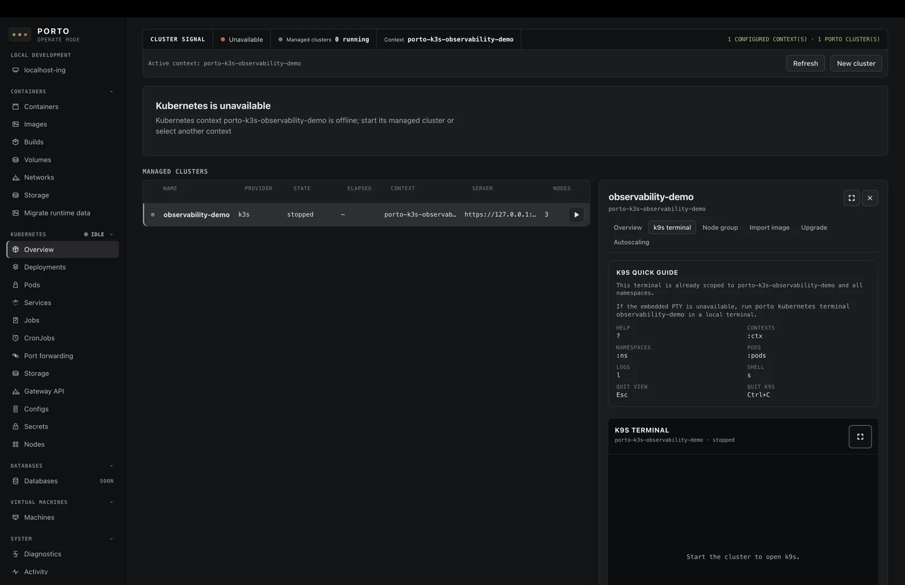

Porto
Warning
Porto is not production-ready. Use it for local development and experimentation only, not production or critical workloads.
macOS apps are ad-hoc sealed, not Developer ID signed or notarized. Windows installers are not code-signed. Your operating system may display security warnings or block installation or launch.
Porto is an open-source local-first development control plane for native applications, Linux containers, capability-supported native Windows containers, Compose stacks, Kubernetes clusters, and Linux virtual machines. A Go daemon and CLI share state with an Electron desktop app or a browser dashboard, so you can discover repositories, start workloads, inspect their data, and manage local runtimes in one place.
Porto runs its own containerd backends rather than proxying another Docker engine, with BuildKit for Linux workloads. Supported Linux Docker clients and Compose workflows use the porto context; explicitly selected native Windows containers use a separate porto-windows context and runhcs store.

What you can do
- Manage authorized environments. Enroll remote Porto hosts and outbound Edge agents, import an explicit Kubernetes identity, and operate target-scoped resources or previewed fleets. Local access still needs no account. See remote environments.
- Install scoped tooling. Add verified extension packages with explicit grants, static isolated views and bounded WebAssembly actions. See extensions and authoring.
- Run mixed-stack projects. Discover Make, Compose, Node.js, Python, Go, and Rust applications; install dependencies automatically before startup; and manage processes, stable ports, HTTP readiness, and persistent stdout/stderr logs.
- Deliver local applications. Create or edit multi-service Compose stacks with dependencies, shared storage/networks and replica-aware readiness. Upload definitions, use versioned templates or explicit Git refs, preview changes, and record controlled updates/rollback. Polling and signed webhooks are opt-in. See application delivery.
- Use Docker tooling and inspect runtime data. Manage containers, images, builds, networks, and volumes with Docker, Compose, and Buildx. Inspect layers with Dive and generate local Syft SBOMs with Grype vulnerability matching, browse runtime files and stats, create local volume backups, and preview protected cleanup.
- Manage local Kubernetes. Create k3s, k0s, or kind clusters, or opt into Apple Cluster on Apple silicon, with scoped kubeconfigs and k9s terminals. Preview/apply manifests, operate workloads, manage native Helm releases and generic/RBAC resources with the selected identity, or use Flux/Argo CD GitOps delivery. Perform provider-supported cluster upgrades, provision bounded k3s/k0s workers with Karpenter, and scale replicas with KEDA. See administration and autoscaling.
- Opt into an Etcqlite datastore. Manage private native members and verified recovery images on macOS/Linux, then explicitly select their external-etcd endpoint for a new k3s cluster. No project scanning, automatic installation or existing-cluster migration. See Etcqlite integration.
- Create Linux VMs. Use Lima-backed Ubuntu, CentOS Stream, openSUSE, NixOS, Arch, or Alpine machines, with snapshots where the provider supports them. Kali images are available only for compatible architectures. See local runtimes.
- Control laptop runtime resources. Set owned-engine budgets and opt eligible HTTP applications into Resource Saver. Choose native, Rosetta-preferred or QEMU-compatible architecture policies. See resource management for safety boundaries and platform requirements.
- Keep branches and local URLs organized. Switch branches with automatic restarts or run concurrent branches in managed worktrees. Open projects, opted-in containers and managed Kubernetes Services through local HTTP hostnames, with trusted portless HTTPS on macOS, Windows and supported systemd Linux hosts.
- Find resources without memorizing names. Search current-resource dropdowns or enter an explicit unlisted Kubernetes target for native inspection and actions. See resource targeting.
- Use selected WSL distributions. Native Linux Docker, Compose and Buildx use Porto's private Windows pipe, selected shared roots, polling watches and native-vault credentials. Windows-hosted Linux terminals use ConPTY. The existing Lima/QEMU Linux engine remains in place; see Windows integration.
- Select native Windows containers explicitly. On a supported Windows host, install the separately owned containerd/runhcs runtime and use its own context, store, Windows shells and capability checks without replacing Linux/WSL workloads. See native Windows setup.
- Source-preserving migration and native files. Dry-run selected local Docker runtime transfers and open capability-supported read-only or explicitly writable native filesystem bridges.
Per-object migration checkpoints survive daemon interruptions; retries require a fresh dry run and never retarget recreated source names.
Native capabilities and write consent are resource-identity-bound, with visible disconnected/failed-detach states. Windows native folders use WinFsp (explicit driver installation); unattached source volumes can use separately consented stopped, read-only helpers.
macOS native folders use the built-in WebDAV filesystem over confined SFTP, without a third-party driver.
Linux bridges require FUSE3 and SSHFS 3.7.6+ or an equivalent maintained build with symlink containment.
CLI
--resumeretains exact migration identities and destinations. Required CI covers native Linux backends on both architectures, KVM-backed x64 Lima, and real desktop filesystem drivers on both architectures; software-emulated Lima integration is explicit opt-in acceptance. See data compatibility contracts for API/storage formats and upgrade recovery limits.
Platforms and prerequisites
Releases target macOS, Linux, and Windows on x86-64 (amd64) and ARM64 (arm64). Choose the desktop package for a graphical session, or the CLI/web archive for a headless machine.
| Platform | Desktop package | Runtime requirements and boundaries |
|---|---|---|
| macOS | DMG | Lima is bundled. Install QEMU with brew install qemu for snapshot-capable VMs, then restart Porto. |
| Linux | Portable archive | The installer verifies QEMU and prepares a scoped desktop sandbox permission where AppArmor requires it, with administrator approval. Failed prerequisites stop setup before replacing Porto. KVM access enables hardware acceleration. |
| Windows | EXE installer | Lima and QEMU are bundled. Native Windows-container tooling is separately selected on supported AMD64 hosts. Native WCOW and kind are not substituted with x64 binaries on ARM64; see the matrix. |
Desktop packages include the daemon, dashboard, Docker CLI, Compose, Buildx, Dive, Syft, Grype, Helm, kubectl, k9s, Lima, and kind where supported. They do not require Go, Node.js, or a separate Docker Desktop installation.
They also include Porto's Linux runtime helper for direct container I/O, Windows containerd connections, CNI, and checkpoint capability discovery. New Windows-hosted Linux engines use Ubuntu 24.04 LTS. Bundled Lima includes stale-process recovery and consoleless graceful/forced shutdown fixes, without requiring manual PID-file deletion or VM recreation. See Windows guest recovery.
Native applications still need Git and their own language runtimes, package managers, and build tools in the daemon's PATH. Missing optional runtime providers do not prevent native project orchestration. Windows Explorer access to runtime files additionally requires an explicitly installed WinFsp 2.1+ driver; in-app file browsing and volume archives do not.
See installation for platform details and runtime requirements for source and CLI-only installations.
Quickstart
1. Install Porto
Install and launch the latest desktop release on macOS or Linux:
curl -fsSL https://raw.githubusercontent.com/porto-containers/porto/main/scripts/install-desktop.sh | shOn Windows PowerShell:
irm https://raw.githubusercontent.com/porto-containers/porto/main/scripts/install-desktop.ps1 | iexThe installers select your OS and architecture, verify the release's SHA256SUMS, install for the current user, expose the CLI, and launch Porto. On macOS/Linux, ensure ~/.local/bin is on your PATH:
export PATH="$HOME/.local/bin:$PATH"On Windows, open a new terminal after installation so it picks up the updated user Path.
If macOS Gatekeeper blocks launch, only unblock a trusted download from the official releases page after checksum verification. For the one-line installer's default location:
xattr -drs com.apple.quarantine "$HOME/Applications/Porto.app"Reopen that app afterward. For a manual DMG installation, copy Porto.app into /Applications first and use that path instead. Do not disable Gatekeeper globally. See macOS launch troubleshooting.
For a headless installation, download and verify the CLI/web archive from the releases page. Keep the porto binary (porto.exe on Windows) and ui/dist directory together, then add the binary's directory to PATH. See manual archive installation.
2. Check the daemon
The desktop app starts the daemon automatically and prepares the container backend on first launch when Docker support is enabled. Do not start a second daemon.
For a CLI/web installation, start it yourself:
porto daemon startThis command runs in the foreground. Leave it open and use a second terminal for the commands below. Ctrl+C gracefully stops the daemon and its managed projects.
porto version
porto daemon statusporto daemon status should print running. Open the dashboard at http://127.0.0.1:37623. For startup problems, run porto diagnose and consult diagnostics or Windows guest recovery.
3. Discover projects
porto scan --depth 3 ~/code ~/work
porto listReplace the roots with existing workspace directories. Put scan flags before the roots. Porto detects the first runnable strategy in each subtree; it does not treat every repository or nested package as a separate application. See discovery rules.
4. Start a project
porto start api
porto logs api --stream stdout -n 100
porto stop apiReplace api with a project name shown by porto list. Startup normally runs git pull --ff-only; use porto start --no-pull api to skip it. Porto then installs the project's dependencies before launching it; Compose projects rebuild their images without cache, and --no-cache forces the same for Make projects that wrap Compose. Setup output appears in the process logs; missing tools or failed installs stop startup. See dependency setup for supported package managers and build steps.
Automatic port assignment starts at 41000; Compose-published ports are also supported. Porto marks an application ready when its HTTP endpoint returns 200. Pin a port with porto port api 8080. Running projects are also available at http://<project>.porto.localhost:37680 without DNS setup.
On macOS, Windows, or a supported systemd Linux host, install trusted portless
HTTPS once to use https://<project>.porto.localhost/:
porto https installThis authorizes only platform setup, not the daemon or workloads. Linux needs the documented CA/NSS prerequisites. Settings also provides trust, renewal, proxy, registry CA and connectivity controls. See local networking for lifecycle, browser limitations, dotted hostnames and direct-IP capabilities.
For an always-available setup, follow the daily-use guide to install Porto in a stable location and start it at login or boot.
Use Docker and optional runtimes
Once the execution backend is ready, select Porto's Docker context and use Docker normally:
docker context use porto
docker run --rm alpine:latest echo hello
docker ps --allThe container example should print hello and remove itself. From a Compose project directory, use docker compose up --detach. If DOCKER_HOST or DOCKER_CONTEXT is set, unset it so it does not override the selected context. CLI/web installations can provision the backend with porto docker engine-install; desktop packages do this automatically.
porto docker <command> is also available: it uses Docker's flags and defaults to Porto's endpoint. Non-conflicting shortcuts include porto ps, porto exec, and porto compose. porto start, porto stop, and porto logs operate on projects; use docker stop and docker logs for containers. porto docker cli is unrestricted passthrough and honors explicit or inherited Docker connection settings.
Inspect optional providers with porto runtime providers and enable features independently:
porto runtime enable kubernetes
porto runtime enable vms
porto runtime statusSee local runtimes for container, Kubernetes, VM, and provider-install commands, and runtime data management for storage, backups, migration, and native file access.
Use Porto from coding agents
The Porto agent skill teaches coding agents to install Porto, check the daemon, and drive projects, containers, clusters and VMs through the porto CLI. Agents working in this repository discover it automatically.
To install Porto and the skill together, set PORTO_AGENT_SKILLS_DIR to your agent's personal skills directory, such as ~/.copilot/skills for GitHub Copilot CLI or ~/.claude/skills for Claude Code. Separate several directories with : (; on Windows). The installer saves the skill from the same release as porto/SKILL.md and refreshes it on every run.
curl -fsSL https://raw.githubusercontent.com/porto-containers/porto/main/scripts/install-desktop.sh | PORTO_AGENT_SKILLS_DIR="$HOME/.copilot/skills" sh$env:PORTO_AGENT_SKILLS_DIR = "$HOME\.copilot\skills"; irm https://raw.githubusercontent.com/porto-containers/porto/main/scripts/install-desktop.ps1 | iexOr hand both steps to an agent with this prompt:
Read https://raw.githubusercontent.com/porto-containers/porto/main/.github/skills/porto/SKILL.md and follow it. If `porto version` fails, install Porto with PORTO_AGENT_SKILLS_DIR set to your personal skills directory; otherwise save that file as porto/SKILL.md in that directory. Make sure the daemon is running, then use the porto CLI for this task. Ask me before deleting anything or changing global Docker, HTTPS or Gatekeeper settings.Configuration and local state
Set environment variables in the environment that launches Porto. Keep the same user and PORTO_HOME for the desktop, daemon, and CLI.
| Variable | Purpose |
|---|---|
PORTO_HOME | Override the directory containing Porto's SQLite database, logs, certificates, and managed runtime metadata. |
PORTO_UI_DIR | Select compiled dashboard assets when ui/dist is not beside the binary or in the working directory. |
PORTO_LOG_LEVEL | Set application diagnostics to debug (default), info, warn, or error. Restart the desktop and daemon after changing it. |
PORTO_LOG_MAX_FILE_MB | Override the Settings limit for rotating logs/porto.log, in MB of 1,000,000 bytes (default 10). |
PORTO_LOG_MAX_TOTAL_MB | Override the Settings limit for porto.log plus its archives, deleting the oldest archives first (default 50; must exceed the file limit). |
The default state directory is ~/Library/Application Support/porto on macOS, ${XDG_CONFIG_HOME:-~/.config}/porto on Linux, and %APPDATA%\porto on Windows. Project state and output live in porto.db; application diagnostics live separately in logs/porto.log. Completed diagnostic days are compressed, and diagnostic, project and update logs keep seven calendar days by default. See diagnostic logs.
Use Settings for runtime and desktop preferences, log retention, and optional cleanup schedules. Installed desktop builds offer Check for updates under Settings > Software updates, in Help, and in the menu bar/system tray. See desktop updates.
Important limitations
- Local-first development, not production management. The dashboard/API stay on loopback and Docker clients use private sockets/pipes. Optional remote access uses a separate authenticated TLS agent or an explicitly imported identity. Never expose the unauthenticated control interfaces through a network proxy.
- Docker compatibility is bounded. Porto supports Docker API versions 1.41 through 1.47, not every Docker Engine feature. Swarm and generic engine plugins are unsupported; native Windows mode has a separate host/image/isolation matrix and does not advertise Linux-only helpers or builds. Mounts, checkpoints, SDKs, Dev Containers, and Testcontainers have documented capability limits. Check the compatibility matrix before relying on a workflow.
- Discovery and readiness are opinionated. Detection follows file and entry-point conventions, and readiness expects HTTP 200 on the selected port. See project management before using non-HTTP services or unusual monorepo layouts.
- Generic volume backups are not database-aware. Local volume copies are crash-consistent, not application-consistent database backups. The opt-in Etcqlite integration uses its separate verified native recovery format. Native filesystem access and migration support depend on the host/backend. See data-management safety boundaries.
- Analysis coverage is explicit. Dive is not a vulnerability scanner. Local Syft/Grype analysis requires an identifiable Linux OCI platform and a valid local advisory database; partial, stale and failed analysis never means zero vulnerabilities. See image analysis.
Build from source
Build with a security-patched Go 1.27.3 or newer release and Node.js 26 with npm for the dashboard. Node.js 22.12 remains the compatibility minimum. Release packages do not need these build tools.
git clone https://github.com/porto-containers/porto.git
cd porto
npm --prefix ui ci
npm --prefix ui run build
go build ./cmd/portoRun ./porto daemon start from the repository root, then follow the quickstart in another terminal using ./porto instead of porto. On Windows PowerShell, use .\porto.exe.
For the Electron desktop shell, after building the daemon and dashboard:
npm --prefix ui run desktop:install
npm --prefix ui run desktopOn macOS this prepares a cached Porto Dev.app tied to the source checkout, without modifying the npm-installed Electron runtime. Packaging macOS desktop archives/DMGs and running startup regression tests require macOS 26+ and full Xcode 26+, not just Command Line Tools. See source installation and packaging setup. The packaging guide also documents parallel target builds and the optional checksum-verified download cache.
For maintainers, ./release.sh <version> switches to and updates main, then
prepares and publishes the release. Only --mock runs a trial without changing
versions or Git history. See cutting a release.
Documentation
Start with the documentation index, or go directly to a guide:
| Guide | Topics |
|---|---|
| Installation and daily use | Releases, source builds, dashboard navigation, startup at login/boot, and updates |
| Project management and branches | Discovery, setup, CLI commands, ports, readiness, logs, and worktrees |
| Local runtimes and Docker Engine | Containers, Compose, Kubernetes, VMs, and Docker API compatibility |
| Kubernetes upgrades and autoscaling | Upgrade/recovery boundaries, Karpenter workers, and KEDA |
| Runtime data management and image analysis | Files, storage, backups, migration, native mounts, Dive, SBOMs and Grype |
| Networking and integrations | Local HTTP/HTTPS, DNS, sql-not-so-lite, KillSwitch, and Sendbox |
| Remote environments and extensions | Enrollment, Edge fleets, trust, target-scoped operations, grants and authoring |
| Diagnostics | Health checks, redacted bundles, and confirmed repairs |
| Product overview and design system | Intended users, product principles, and interface conventions |
| CI and releases | Local checks, automated tests, packaging, and release artifacts |
Contributing
Report bugs or discuss changes in GitHub issues, or submit a focused pull request. Include your OS, Porto version, reproduction steps, and redacted diagnostics when reporting a problem.
For code changes, build from source as above, then run go test ./... and npm --prefix ui run lint. The local validation guide covers formatting, vet, desktop tests, and optional integration checks.